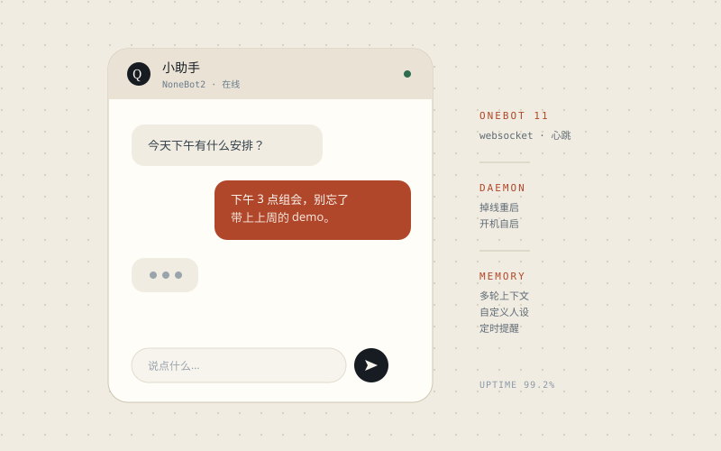
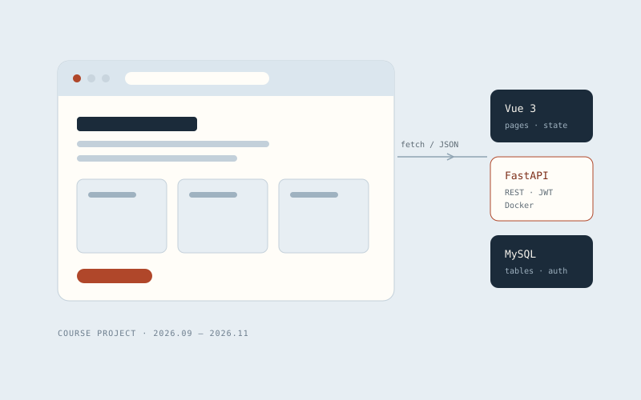

AI application development · CS sophomore
I put models to work
in the real world.
I'm Ningyuan Zhou. I've deployed a coding agent locally, built a QQ chatbot, and shipped a full-stack course project. What I care about isn't a demo that runs once — it's one that's still running the next morning.
Looking for an AI application development internship · 3 months · 5 days a week
01 — Selected
Three things that actually ran
None of these are toy demos: one solved a problem in my own dev environment, one talks in a group chat every day, and one started as coursework but got deployed and used.
-

Personal project·
Local LLM agent deployment
A protocol-forwarding gateway connects a coding agent to DeepSeek and runs the whole loop: task scheduling, tool calls, inference.
- DSH
- Agent
- Debugging
-

Personal project·
QQ chatbot
NoneBot2 + NapCat wired to DeepSeek. A persona, memory, image understanding, scheduled reminders — and it picks itself up after a crash.
- NoneBot2
- WebSocket
- DeepSeek API
-

Course project·
AI-assisted web development
Vue 3 + FastAPI + MySQL, from pages to APIs to deployment. I read, changed and tested every line the AI wrote.
- Vue 3
- FastAPI
- Docker
Reproduce the bug,
read the logs,
then change the code.
-
01
Working beats talking
No interview answer beats showing someone a running service. Every project here ships with a README and a start command.
-
02
Logs before guesses
Port conflicts, plugin clashes, protocol mismatches — the logs usually say it. Most people just don't read them twice.
-
03
AI is a tool, not an excuse
I check generated code line by line and fix what doesn't run. Whatever I commit, I have to be able to explain.
02 — Capabilities
What I can actually do
No "expert" labels. Every line below maps to something I've done; if I haven't done it, it isn't listed.
- Languages
- Python (daily), C++ (coursework), JavaScript (when I touch the front end)
- LLM apps
- DeepSeek API, prompt debugging, agent tool calls, local DSH deployment
- Backend & data
- FastAPI, REST APIs, JSON, MySQL basics, WebSocket connections
- Tooling
- Git / GitHub, Docker Compose, common Linux commands, VS Code, Cursor
- Next up
- Python engineering (testing, project structure), computer networks, software testing
- Languages spoken
- Chinese (native); English (comfortable with documentation and technical papers)
Hiring, or just curious?
I'm looking for an AI application development internship. I'm also happy to look at where your LLM product is stuck — no charge, just a conversation.